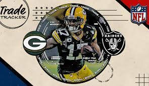

<!DOCTYPE html>
<html lang="en-us"></html>
<head>
  <title>Davante Adams</title>
  <link href="CSS/styles.css" rel="stylesheet" type="text/css">
</head>
<body>
  <h1><strong>Davante Adams #17</strong></h1>
  
  <h2><em>NFL Team: Oakland Raiders</em></h2>
  <h2>Position: Wide Receiver</h2>
  <h2>College: Fresno State</h2>
  <h3>Statistics:</h3>
    <div class="stats">  
      <ul>
        <li>2021 Green Bay - Recieving yards: 1553</li>
        <li>2020 Green Bay - Recieving yards: 1553</li>
        <li>2019 Green Bay - Recieving yards: 1553</li>
        <li>2018 Green Bay - Recieving yards: 1553</li>
        <li>2017 Green Bay - Recieving yards: 1553</li>
        <li>2016 Green Bay - Recieving yards: 1553</li>
        <li>2015 Green Bay - Recieving yards: 1553</li>
      </ul>
    </div>
  <h4>Biography:</h4>
  <p> Davante Lavell Adams is an American football wide receiver for the Green Bay Packers of the National Football League. He played college football at Fresno State, and was selected by the Packers in the second round of the 2014 NFL Draft. </p>
  <h4>Teams:</h4>
    <ol>
      <li>2022 Oakland Raiders (AFC West) - Current Team</li>
      <li>2014 Green Bay Packers (NFC North)</li>
      <li>2011 Fresno State Bulldogs Football</li>
    </ol>
</body>